WORK, ENERGY AND SIMPLE MACHINES
WORKForce × displacement
ENERGYCapacity to do work
POWERRate of doing work
W = Fs cos θ
K = ½mv²
P = W/t
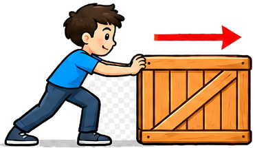
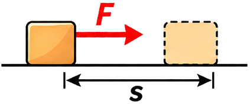
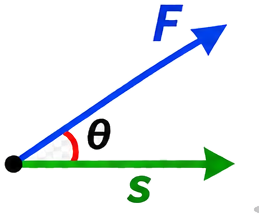
A force of 1 N displaces an object by 1 m along the force.
A force of 1 dyne displaces an object by 1 cm along the force.
Force and displacement act in the same direction.
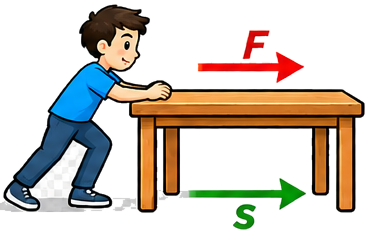
Example: Pushing a table forward.
Force and displacement act in opposite directions.
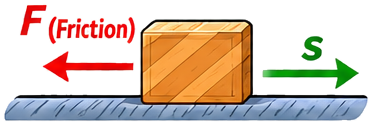
Example: Friction opposing motion.
When s = 0, work done is zero.
Example: Pushing a rigid wall.
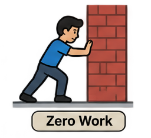
Force is perpendicular to displacement (θ = 90°).
Example: Centripetal force on a satellite.
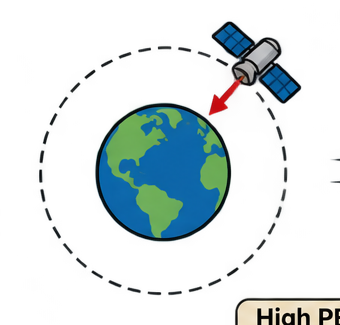
Energy possessed by an object due to its position, configuration or shape.
Examples: Water stored in a dam; stretched bow or spring.
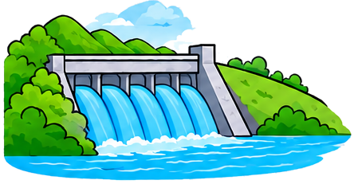
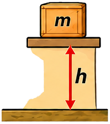
Energy due to height or position.
Energy stored due to deformation.
Energy possessed by an object due to its motion.
Example: A moving car.
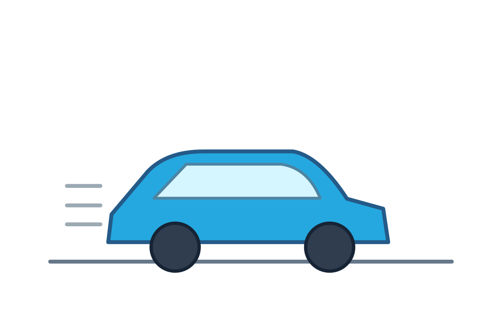
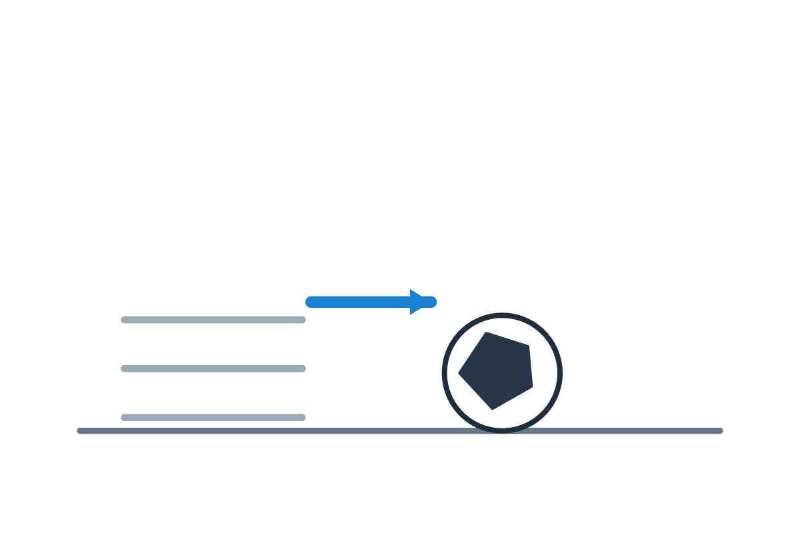
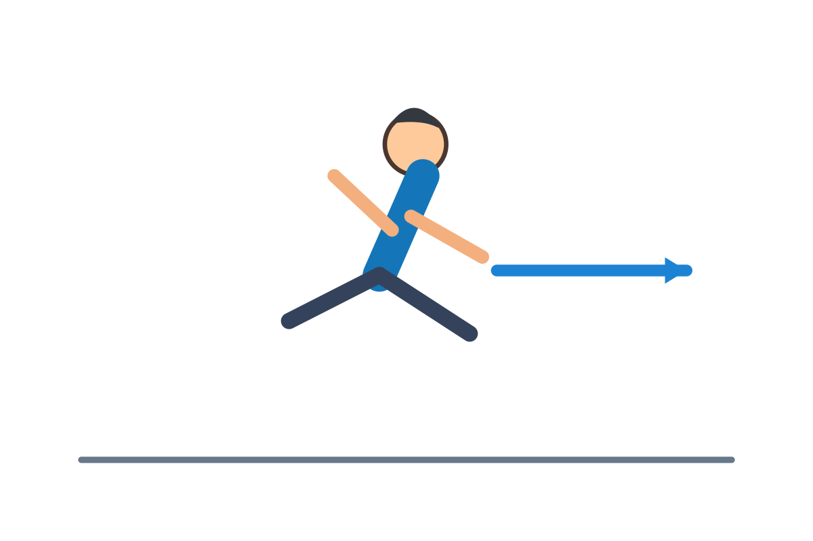
m = mass; v = velocity
| Feature | Kinetic Energy | Potential Energy |
|---|---|---|
| Depends on | Motion | Position or configuration |
| Examples | Moving vehicle | Stored water; stretched spring |
| Formula | K = ½mv² | PE = mgh or ½kx² |
The net work done by all forces acting on an object equals its change in kinetic energy.
Given: F = ma and v² − u² = 2as
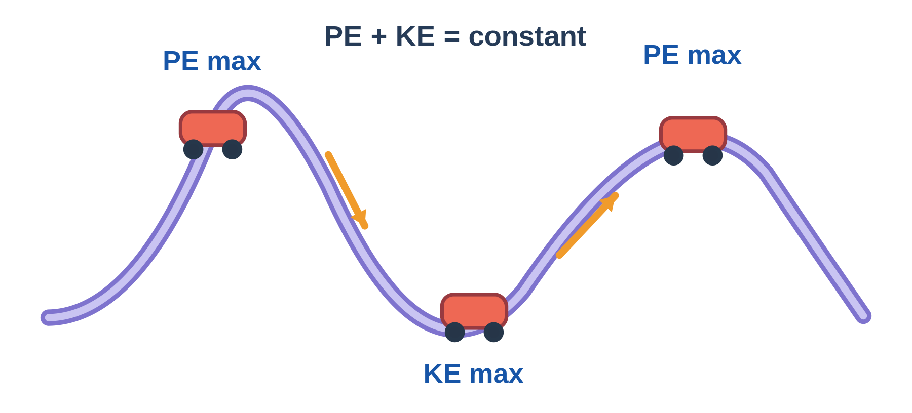
When only conservative forces act, the sum of kinetic and potential energy remains constant.
A body of mass m is released from rest at height H. At an intermediate height h (neglect air resistance):
| Quantity | Expression |
|---|---|
| Velocity | v² = 2g(H − h) |
| Kinetic energy | K = mv²2 = mg(H − h) |
| Potential energy | PE = mgh |
| Total mechanical energy | K + PE = mg(H − h) + mgh |
| Conserved energy | K + PE = mgH = constant |
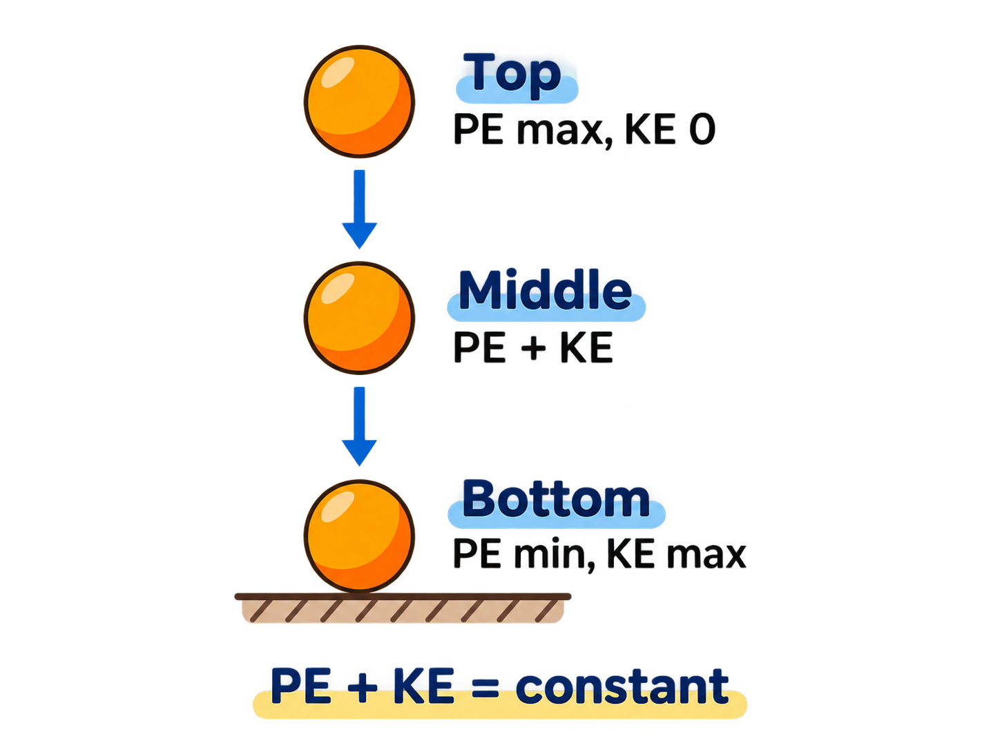
| Position | KE | PE | Total (ME) |
|---|---|---|---|
| Top (H) | 0 | mgH | mgH |
| Middle (H/2) | mgH/2 | mgH/2 | mgH |
| Bottom (0) | mgH | 0 | mgH |
For a pendulum bob of mass m, released from rest at height H above its lowest point, consider a position at height h.
At extreme positions: PE maximum, KE zero. At lowest position: KE maximum, PE minimum. Neglect air resistance and pivot friction.
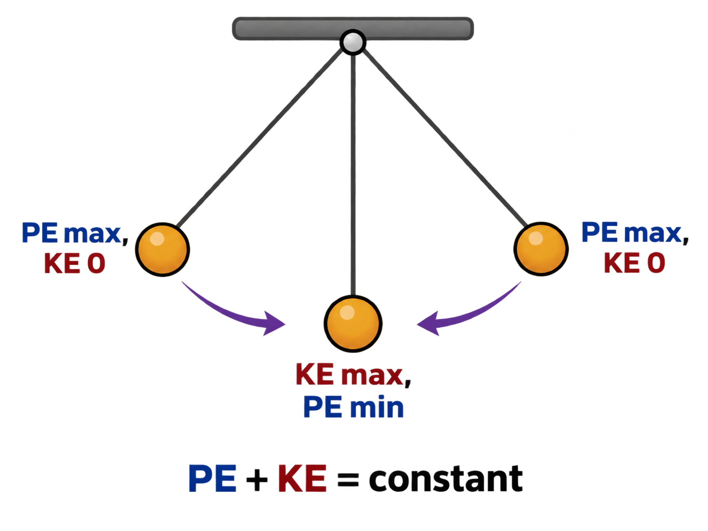
| Position | KE | PE | ME |
|---|---|---|---|
| Left extreme | 0 | mgH | mgH |
| Equilibrium | mgH | 0 | mgH |
| Right extreme | 0 | mgH | mgH |
The amount of work done per unit time, or rate of doing work, is called power. Power is a scalar quantity.
watt (W)
joule/second (J/s)
erg/second
horsepower (hp)
1 hp = 746 W
Work done by a source of electricity to maintain current in a circuit.
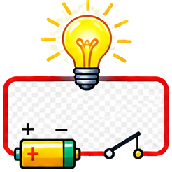
SI unit: joule (J)
Commercial unit: kilowatt-hour (kWh)
The rate at which electric energy is consumed in a circuit.
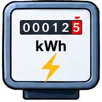
Electrical energy consumed over time:
A device that makes work easier by changing the magnitude or direction of the applied force. Ideally, it does not reduce the total work done.
The force applied to a machine to perform work.
The force that has to be overcome.
Ratio of load to effort; no unit.
Illustrated concept diagram · folder-based PNG

Source: textbook Fig. 7.23, page 130
Illustrated concept diagram · folder-based PNG
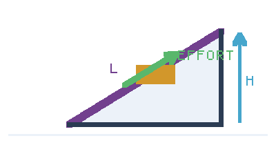
Fig. 7.28, page 132
Smaller effort through a greater distance
Fig. 7.29, page 132
Fig. 7.27, page 131
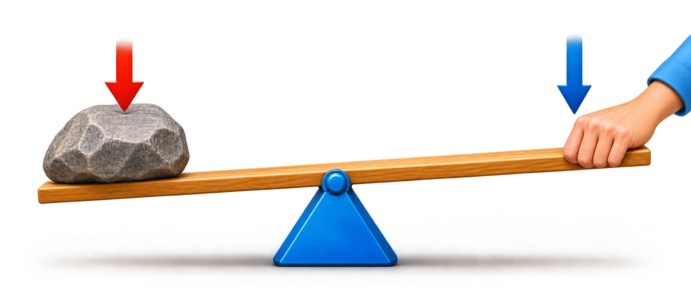
Illustrated concept diagram · folder-based PNG
| Class | Relative positions | Examples from the textbook |
|---|---|---|
| Class I | Fulcrum in between | Tongs, scissors, crowbar, pliers, balance scale, seesaw |
| Class II | Load in between | Lemon squeezer, wheelbarrow, bottle opener |
| Class III | Effort in between | Tongs, tweezers, broom, hammer, oar |
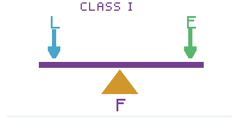
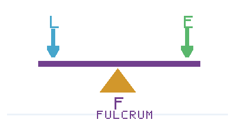
Fig. 7.31, page 133